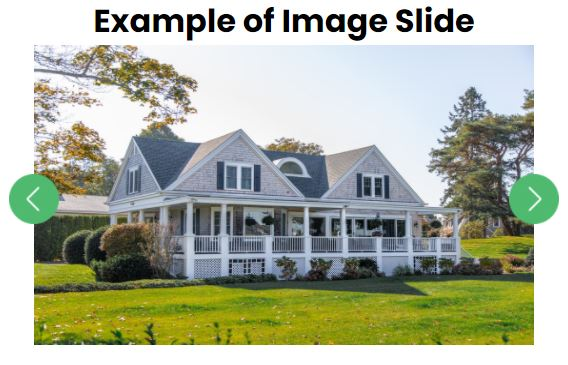
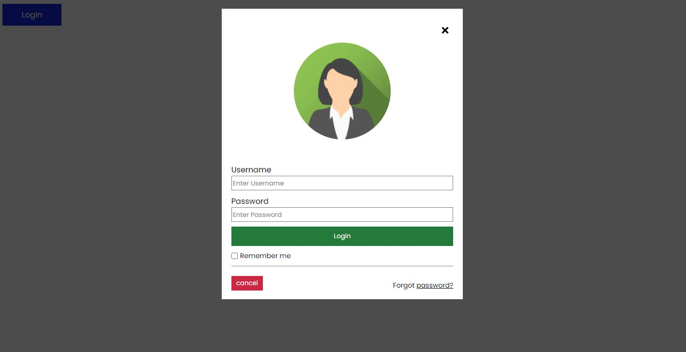
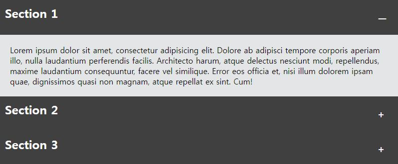
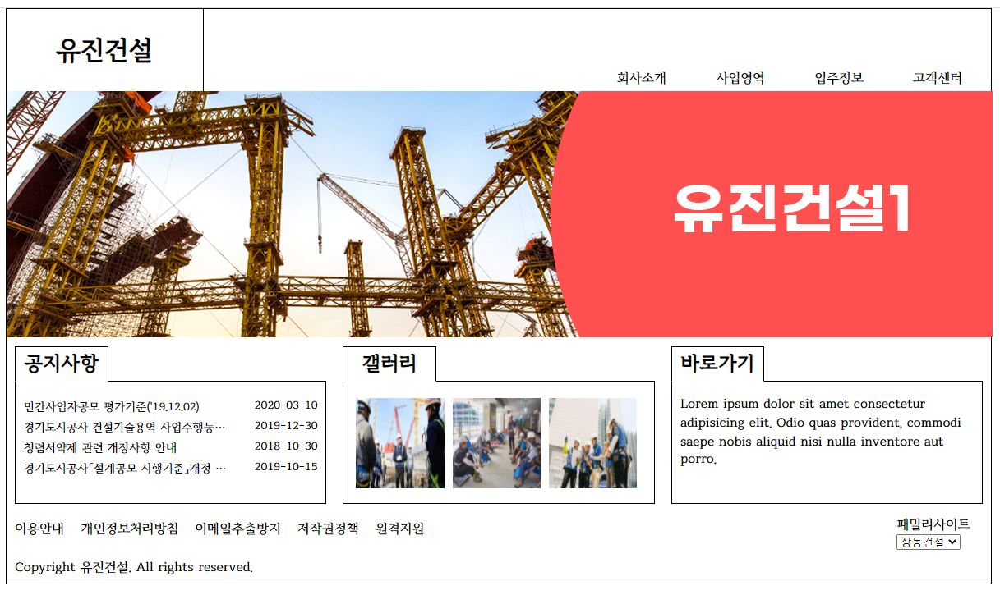
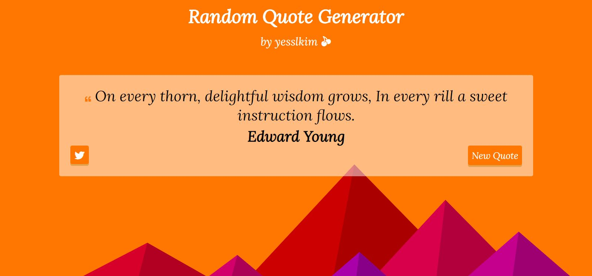
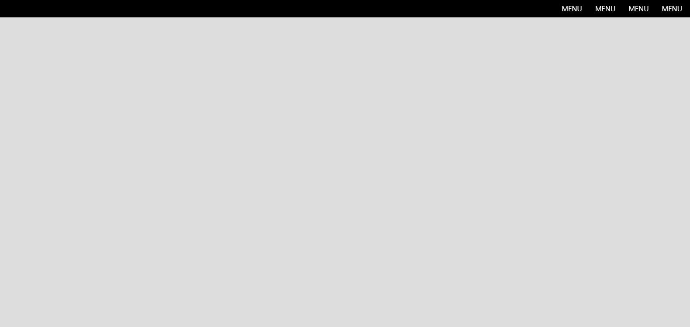

처음 자바스크립트를 사용해 봤을 때 부터 만들어본 다양한 예제를 모아둔 웹사이트입니다.
각각의 예제는 README.MD를 통해 무엇을 배웠고, 간략한 느낌점을 적어보았습니다:)
README.md 바로 가기
-

이미지 슬라이드 연습 ↓
20.09.14버튼을 클릭 시, 이미지가 변경되도록 만들어 보았습니다.
-

로그인 폼 연습 ↓
20.09.20버튼을 클릭 시, 로그인폼이 나오도록 구현해 보았습니다
-

아코디언 메뉴 연습 ↓
20.09.22버튼을 클릭 시, 아코디언 메뉴가 나오도록 구현해 보았습니다
-

심플 웹사이트 연습 ↓
20.10.05웹디자인 기능사 실기 문제를 토대로 심플한 웹사이트를 구현해보았습니다. 이곳에서 구현한 것은 이미지 슬라이드, 모달창 네비게이션 바가 있다.
-

Random Quote Generator ↓
20.10.08Random Quote를 fetch하여서 데이터를 html파일에 바로 보여주는 방식을 연습하기 위해 만든 웹사이트입니다.
-

Make transparent navbar ↓
20.10.11스크롤링 이벤트 연습을 해보았습니다